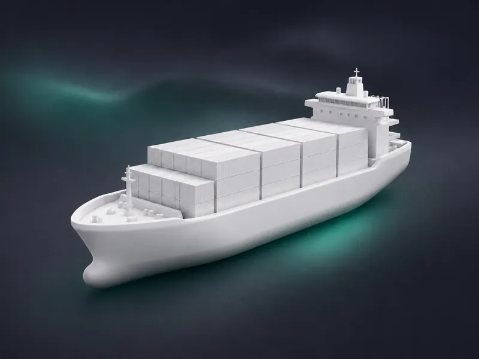
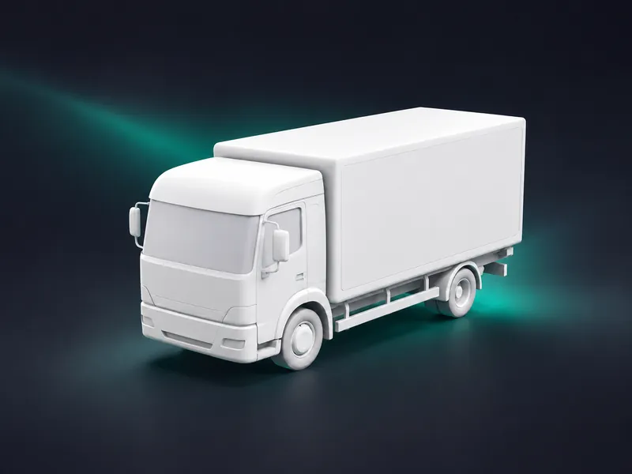
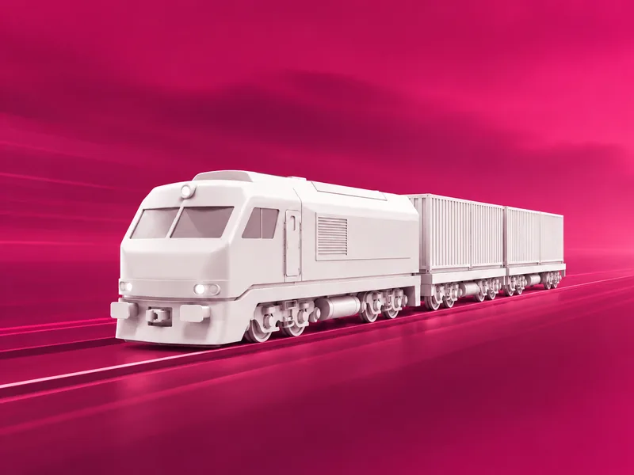

From tariffs to real prices across
all transport modes
Rank door-to-door landed cost — not the ocean or road line alone. FCL, LCL, FTL, LTL, rail, barge and air, with surcharges, locals and FX in one comparable price.
What Multimodalis Does
One Platform for All Pricing Complexity
Multimodalis unifies fragmented tariff landscapes into a single, structured pricing engine — across every mode, every surcharge and every cost combination.
Unify Tariffs
Bring ocean, road, rail, barge and airfreight rates into one structure and one system of record.
Apply Full Cost Logic
Automatically include fuel, BAF, THC, toll, handling, pickup, drop-off, LWS and all surcharges.
Compare Real Prices
Benchmark complete transport options side by side — not isolated rate sheets from separate systems.
Sales offers, tenders and RFQ
Generate versioned customer offers from FCL, LTL, air and LCL rates. Run tenders, capture supplier responses and track capacity — not a generic slogan.
A unified pricing engine for transport logistics
Multimodalis does not just display tariffs. It calculates real transport prices – across all transport modes, all cost elements and all relevant pricing structures.
Unified pricing engine
One pricing logic for FCL, LCL, FTL, LTL, Rail, Barge and Airfreight – all calculated in one system.
Complete cost breakdown
Include base rates, surcharges, local charges, handling, fuel, BAF, toll, LWS, terminal costs and currency conversion.
Combination logic
Combine different tariffs and transport legs into one valid, optimized transport option with one total price.
NAC, tenders, capacity and spot
Run tenders, collect supplier responses, track capacity and send spot inquiries. NAC is a workflow — not just another rate type — and results sit next to your contracted tariffs.
Sales offer generation
Build versioned customer offers from group templates, export PDF, and pull rates from FCL, LTL, air and LCL into one commercial document.
High degree of automation
Automate recurring pricing logic, tariff imports, inbound RFQs and cost updates to cut manual work.
All Transport Modes. One Pricing Logic.
Multimodalis connects pricing structures that usually live in separate spreadsheets, separate teams and separate systems.

Ocean
FCL and LCL with port locals — contract port-to-port plus live carrier online rates on the same lanes.

Road
FTL and LTL including toll, fuel, pickup and drop-off, plus piece–LDM calculation and carrier-specific LTL rules.

Rail & Barge
Intermodal tariffs, combination legs, terminal costs, and all-in / zone surcharge (KV) maintenance with period control.
Airfreight
Airfreight with chargeable weight, FSC and SSC, security fees and add-ons in the landed price.
Included Pricing Components
Why Complete Pricing Matters
Comparing only base rates produces misleading results. Multimodalis calculates the full cost of each transport option — making comparisons accurate and decisions defensible.
Full end-to-end coverage
Connect origin, main carriage and destination pricing in one continuous transport logic.
Pre-carriage
- Pick-up costs
- Pre-carriage
- Pre-carriage surcharges
- Local charges origin
Main leg
- Main carriage
- Seafreight / Rail / Barge / Airfreight
- Freight
- Surcharges
On-carriage
- Local charges destination
- On-carriage
- On-carriage surcharges
- Drop-off costs
From tariff data to better decisions
Multimodalis structures pricing complexity into a clear workflow – so your teams can calculate, compare and act faster.
Import or maintain tariffs
Upload rate sheets or maintain tariffs directly in the platform – by mode, provider, region and customer logic.
Apply pricing rules
Add surcharges, local charges, access rules, currency conversion and all relevant pricing conditions.
Run queries or RFQs
Search routes, compare options, quote customers or request supplier rates. Save ranked queries and reuse them in sales offers and RFQs.
Decide with full transparency
Get the best option instantly – with complete cost breakdown, valid combinations and comparable alternatives.
Built for pricing teams across logistics
Whether you buy transport, sell transport or operate capacity – Multimodalis structures offers, tenders and tariff responses in one pricing process.
Freight Forwarders
Turn FCL, LTL, air and LCL rates into structured customer offers — versioned documents, group templates and PDF, not a spreadsheet dump.
Procurement Teams
Benchmark complete door-to-door options against contracts and tender responses — the real best price, not the cheapest base rate.
Rail, Barge & Truck Operators
Maintain structured tariffs and respond to capacity and tender requests with comparable rates on your tenant.
Sales Teams
Generate versioned customer offers from FCL, LTL, air and LCL rates — group templates, PDF export, and ranked options you can reuse.
Tender Management
Run tenders and RFQs, collect supplier responses, track capacity and handle spot inquiries against your existing tariff landscape.
Rates & surcharges
One place for tariffs, surcharges and locals. Pricing, sales and procurement share the same stack — and decide faster, on your tenant.
Enterprise-ready for operational pricing
Enterprise-ready: legal, compliance and security on your isolated tenant — with RBAC and OAuth / SAML / Enterprise SSO so departments share rates without sharing the whole company.
Web-based application
No local installation. Access pricing workflows securely through your browser.
Quote API, TMS/ERP & import
Import tariff data at scale and expose an intermodal quote API so TMS and ERP systems can request landed prices — not import only.
Role-based access control
Enterprise RBAC: define who can view, maintain, release or request rates and surcharges — by team and role.
OAuth, SAML & Enterprise SSO
Sign in with your identity provider. Departments reach the same tenant through OAuth, SAML or Enterprise SSO.
Frequently asked questions
See how Multimodalis fits your pricing process
Request a demo and explore how Multimodalis can structure complex tariff landscapes, automate price logic and improve commercial decisions.
Why teams choose Multimodalis
Rates and surcharges in one tenant — sales, procurement and pricing decide faster.